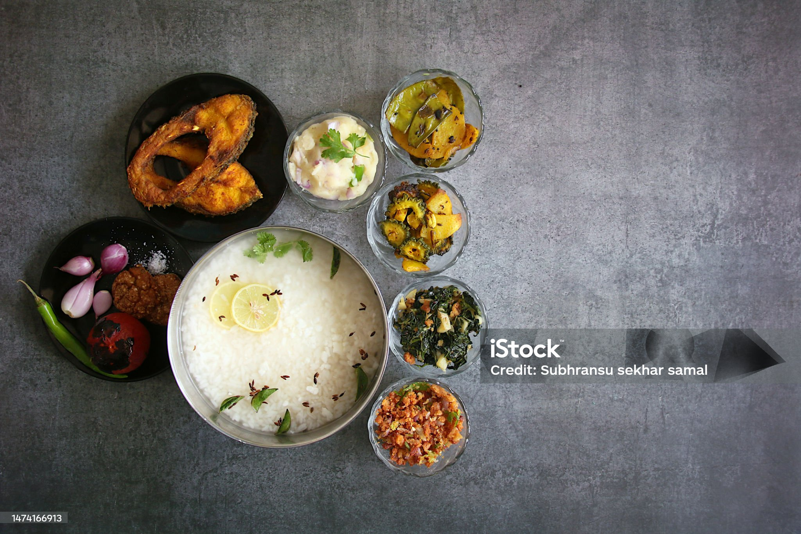

Odisha is known for its taste across the country. Some of the very famous foods of Odisha are given below.

- Traditional Cooling Dish – Pakhala Bhata is fermented rice soaked in water, often served with curd, salt, and sometimes lemon or green chili. It’s especially eaten in summer to keep the body cool.
- Cultural Significance – Odisha celebrates “Pakhala Dibasa” (Pakhala Day) on 20th March every year, highlighting the dish’s importance in Odia culture and daily life.
- Nutritious & Refreshing – Fermented rice in Pakhala is rich in probiotics, aiding digestion and boosting gut health, while also being light and refreshing.
- Really it's just like a elixir for Odias
- Special Festival Dish – Enduri Pitha is especially prepared during Prathamastami, a festival in Odisha that celebrates the well-being of the eldest child in the family.
- Unique Turmeric Leaf Steaming – The pitha is made by steaming rice flour batter filled with coconut and jaggery stuffing inside turmeric leaves, which give it a distinct aroma and flavor.
- Healthy & Nutritious – Since it is steamed (not fried) and uses natural ingredients like rice, coconut, jaggery, and black gram, Enduri Pitha is both delicious and easy to digest.
- Cultural Pride – Often called the “Pride of Odisha”, Chhena Poda is offered in temples and is an essential part of Odia festivals and celebrations.
- Accidental Invention – Chhena Poda, meaning “roasted cottage cheese”, was accidentally created when leftover sweetened chhena (cottage cheese) was left in a hearth overnight and baked.
- Unique Flavor – It is the only Indian sweet that is baked; the caramelized sugar gives it a distinct smoky-sweet taste.